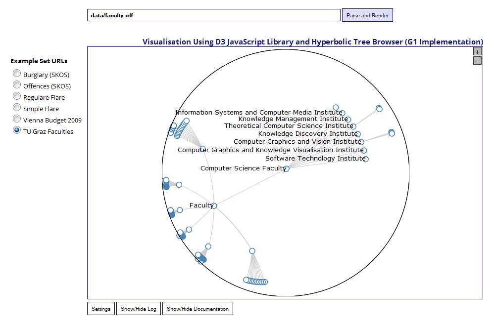
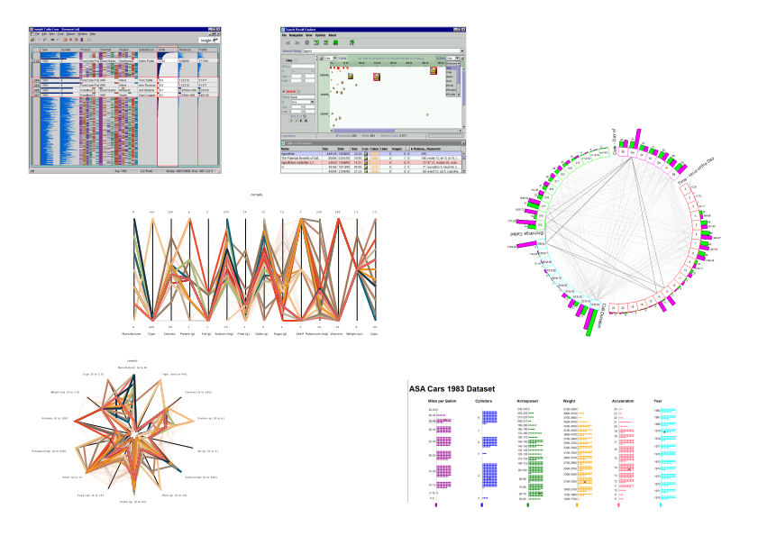
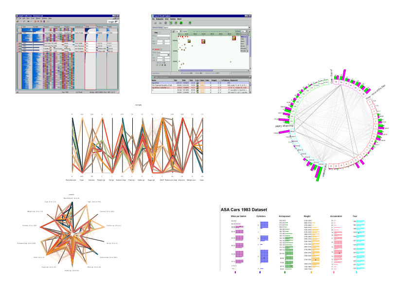
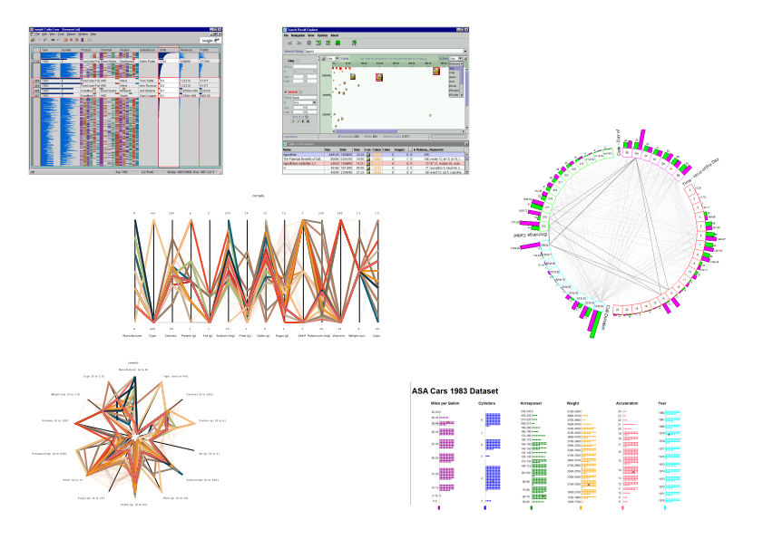

Increase and resize images in pop-up window

Images in "PNG" format.
 

" /><polygon points="11,5 10,4 0,16" style="fill:black;" /></svg>)
Images in "SVG" format.

Project Website:
https://github.com/kogi18/IAWEB/
Slides:
https://github.com/kogi18/IAWEB/tree/master/Project/rSlidyAnimated/
Local Test Server - Feel Free to Try on Any Device:
IP:8080
I am not sure how it is with eduroam networking, but I use a local tomcat server for testing on mobile phone
ALTERNATIVE: find a free WWW server and post the link here
Tue 31 Jan 2017, TU Graz, Graz, Austria.
A 2015 TUG project started by Markus Schofnegger.
It is the "powerpoint" equivalent run on HTML, CSS and JavaScript.
It is able to display slides stored within a single HTML file.
To use rslidy for a presentation, the rslidy.js file and all relevant CSS files have to be included in your HTML slides file.
Alternatively, the rslidy.min.js and rslidy-combined.min.css files can be used if no custom settings or other modifications are needed.
To create the final JavaScript file from the original TypeScript Grunt can be used:
tsc rslidy.tsGrunt can be used to minify both JS and CSS files and it also creates a ZIP archive of rslidy.
Animation and more user friendly plug & play presentation functions.
The upgraded rslidy version setup is the same by loading the needed JS and CSS in the presentation file.
New files are the animation CSS file and 3rd party components.
The new needed HTML head became as follows:
Tested it on actual Samsung Galaxy S2 and S6, Iphone 5, Iphone 6, Iphone 6 plus, Ipad, Ipad pro, different screen resolutions and online tests.
We tried to solve most of the probleems, but for some time ran out:
We implemented a rotation on the Y axes animation for the menu bar buttons, similar to the classical hamburger icon animation.
// JavaScript triggers the switch to clicked class and state + button value change
document.getElementById("button-overview").addEventListener('click', function (){
this.utils.switchElementsClass([document.getElementById("button-overview")], "clicked");
this.full_overview_locked = this.full_overview_locked != true;
if(this.full_overview_locked){
setTimeout(function(){
document.getElementById("button-overview").value = "X";
}, this.button_delay);
}else{
setTimeout(function() {
document.getElementById("button-overview").value = "Slides";
}, this.button_delay);
}
this.overviewToggleClicked(!document.getElementById("button-overview").classList.contains("clicked"));
}.bind(this));
/*CSS has to bind different keframes to same element for 1 time animations*/
#button-overview, #button-toc, #button-menu{
animation-duration: 0.3s;
animation-timing-function: ease-in-out;
animation-fill-mode: forwards;
animation-name: flip2Face;
}
#button-overview.clicked, #button-toc.clicked, #button-menu.clicked{
animation-name: flip2Back; /* flip2Back is the reverse version of flip2Face*/
transform: rotateY(180);
}
@keyframes flip2Face {
0% { transform: translateZ(0) rotateY(180deg) scale(1); }
40% { transform: translateZ(-150px) rotateY(160deg) scale(.95); }
50% { transform: translateZ(-150px) rotateY(90deg) scale(.9); }
90% { transform: translateZ(-150px) rotateY(70deg) scale(.95); }
100% { transform: translateZ(0) rotateY(0) scale(1); }
}
Previously ToC and Slide side menu fixed to the left side and activated by button click.
https://highlightjs.org
) as base for formating and element coloring
1
// JS example
for(var i = 0; i < table.length; i++){
table[i].addEventListener('click', function (e) {...}
}
/* CSS example */
#hello, a.world:hover{
color: black;
}
1// JS example for(var i = 0; i < table.length; i++){ table[i].addEventListener('click', function (e) {...} }/* CSS example */ #hello, a.world:hover{ color: black; }
body.animated .slide{
display: block;
overflow: hidden;
visibility: hidden;
height: 0;
width: 0;
padding: 0;
}
@keyframes opacityOff{
0% {opacity: 1; visibility: visible; height: auto; width: auto; padding: 2em;}
99% {opacity: 0; visibility: visible; height: auto; width: auto; padding: 2em;}
100% {opacity: 0; visibility: hidden; height: 0; width: 0; padding: 0;}
}
@keyframes opacityOn{
0% {opacity: 0; visibility: hidden; height: 0; width: 0; padding: 0;}
1% {opacity: 0; visibility: visible; height: auto; width: auto; padding: 2em;}
100% {opacity: 1; visibility: visible; height: auto; width: auto; padding: 2em;}
}
@keyframes opacityOnList{
0% {opacity: 0; visibility: hidden; height: 0; width: 0;}
1% {opacity: 0; visibility: visible; height: auto; width: auto;}
100% {opacity: 1; visibility: visible; height: auto; width: auto;}
}
/* General transition animation settings */
body.animated .slide,
body.animated .slide ul.incremental li:not(.invisible){
animation-fill-mode: forwards;
animation-duration: 1s;
animation-timing-function: linear;
}
body.animated .slide ul.incremental li:not(.invisible){
animation-fill-mode: backwards;
}
/* Without direction we skip the animation*/
body.animated :not(.animatedForward):not(.animatedBackwards).slide{
animation-duration: 0s;
animation-delay: 0.001s; /* for loader preloading it is set to the minimum JS 1ms delay*/
}
/* TIME DELAY FOR NEW SLIDE SHOULD BE SAME AS TRANSITION DURATION*/
body.animated :not(.hidden).slide{
animation-delay: 1s;
}
/************************************************************************/
/* DEFAULT OPACITY transition */
/************************************************************************/
/* General animation settings for old slide */
body.animated .hidden.slide.animate,
/* Also sets the calls for default animation of opacity change */
body.animated.opacity .hidden.slide.animate,
body.animated .hidden.slide.animate.opacity-animation{
animation-name: opacityOff; /* Default animation */
}
/* General animation settings for new slide */
body.animated :not(.hidden).slide,
/* Also sets the calls for default animation of opacity change */
body.animated.opacity :not(.hidden).slide,
body.animated :not(.hidden).slide.opacity-animation{
animation-name: opacityOn; /* Default animation */
}
body.animated .slide ul.incremental li:not(.invisible),
body.animated.opacity .slide ul.incremental li:not(.invisible),
body.animated .slidel.opacity-animation ul.incrementa li:not(.invisible),
body.animated .slide ul.incremental.opacity-animation li:not(.invisible){
animation-name: opacityOnList; /* Default animation */
}
var images = document.getElementsByTagName("img");
for (var i=0, var len=images.length, var img; i<len; i++) {
img = images[i];
img.addEventListener("click", function() {
var sourceImage = document.createElement('img');
sourceImage.src = this.src;
sourceImage.style.maxHeight = "100%";
sourceImage.style.maxWidth = "100%";
openSweetAlertImage(sourceImage);
});
}
function openSweetAlertImage(string) {
swal({
html: string,
showCancelButton: false,
showConfirmButton: false,
confirmButtonText: "Close",
animation: true,
title: " ...",
onOpen: function(){
var modalElement = document.getElementsByClassName("swal2-modal")[0];
modalElement.classList.add("imageAlert");
var titleElement = modalElement.getElementsByClassName("swal2-title")[0];
var zoomButtons = titleElement.getElementsByTagName("button");
titleElement = titleElement.getElementsByTagName("span")[0];
var img = modalElement.getElementsByClassName("swal2-content")[0].getElementsByTagName("img")[0];
var widthPer = img.naturalWidth / 100;
var heightPer = img.naturalHeight / 100;
var fitScreenPer = 90 * window.innerWidth / img.naturalWidth;
fitScreenPer = Math.floor(fitScreenPer/10) * 10;
titleElement.innerHTML = fitScreenPer;
img.style.height = heightPer*fitScreenPer + "px";
img.style.width = widthPer*fitScreenPer + "px";
for(var buttonID = 0; buttonID < zoomButtons.length; buttonID++){
zoomButtons[buttonID].addEventListener("click", function(changeBy){
var zoom = parseInt(titleElement.innerHTML);
zoom = zoom + parseInt(this.innerHTML);
if(zoom > 0){
img.style.height = zoom * heightPer + "px";
img.style.width = zoom * widthPer + "px";
titleElement.innerHTML = zoom;
}
});
};
window.addEventListener('keypress', function (e) {
if (e.key == '+' || e.key == '-' || e.key == '0') {
var zoom = parseInt(titleElement.innerHTML);
if(e.key == '+'){
zoom = zoom + 10;
}
else if(e.key == '-')
{
zoom = zoom - 10;
}
else{
zoom = 100;
}
if(zoom > 0){
img.style.height = zoom * heightPer + "px";
img.style.width = zoom * widthPer + "px";
titleElement.innerHTML = zoom;
}
}
}, false);
}
}, function (confirmed) {
}).catch(swal.noop);
}
Missing qualifications??? Would be nice if there wer more written stuff here